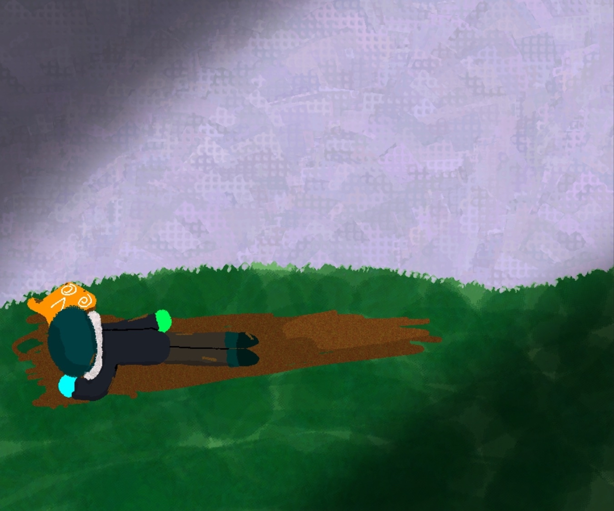
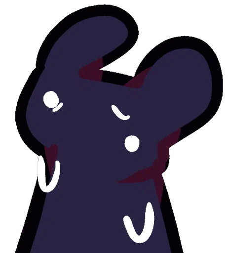
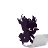
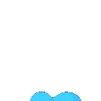

I am Blue Plantex
A shadow entity lost everywhere @w@

ALSO! I should clarify this is a remake of his Straw page, made entirely by TDRP. Check out the original here.
Despite my ability of sniping far away... I suck at finding stuff.

I am currently learning several skills, and here's the list:

Editing
Soon Blender and MusicI am still learning life.